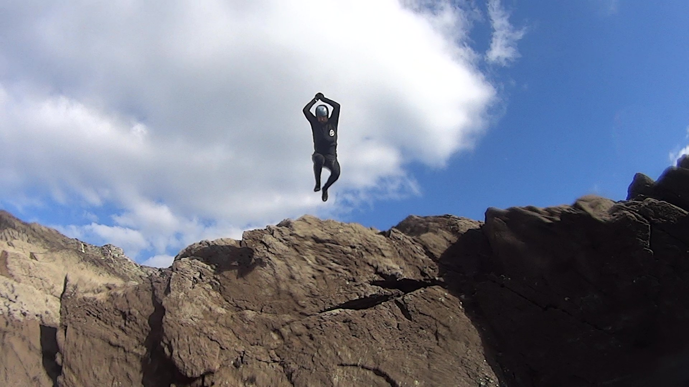
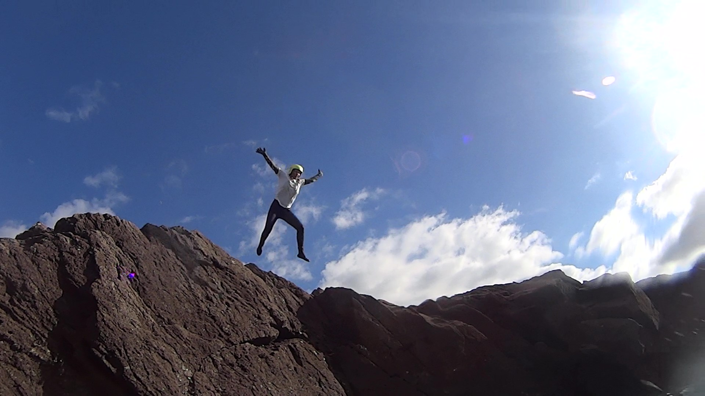

Accessible Adventure
At Accessible Adventure we have the desire to share the natural spaces around the Cornish Coastline with everyone. This includes sharing the experience with children and young people who have additional needs or are otherwise neuro-divergent.
Coasteering
We will take you exploring the dramatic and historic Cornish Coastline around Newquay. You could be exploring smugglers caves, be swirled around in natural whirlpools, experience tidal rise and fall in "The Chimney", swim through "Gollum's Cave", and test yourself with the three levels at "Triple".
Accessibility
Dave, our director and one of the lead instructors, has over 12 years coasteering experience, and over 10 years experience working with children and young people with additional needs. Please get in touch if you have additional needs, or are a parent of someone with additional needs who would like the opportunity to explore the coastline with people who have experience in providing memorable, life affirming experiences for those who see the world differently.
Meet The Team
Dave
In it, on it or under it, Dave likes being in the water. Coasteering, scuba diving, kayaking, surfing, swimming, Dave does it all to varying degrees of success (he really can't surf!!). Dave has been a teacher at Truro College specialising in Outdoor Education for young people with additional needs for the last 12 years.
Suse
A northern lass with a passion for the outdoors, Suse has travelled the world! After living in New Zealand for a couple of years and enjoying their very outdoor lifestyle, she decided that the big city life and an office job was not for her, so on her return to the UK, she moved from Leeds to Newquay in 2009.
Contact
Phone
07856 211 044
hello@accessibleadventure.uk